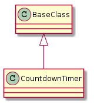

A module to hold yet another countdown-timer.

CountdownTimer(repetitions, *args, **kwargs) |
A countdown timer keeps track of time Remaining. | ||
CountdownTimer.lap_times |
|
||
CountdownTimer.remaining_time |
calls next_laptime(), calculates remaining time | ||
CountdownTimer.total_time |
|
||
CountdownTimer.median_laptime |
|
||
CountdownTimer.remaining_repetitions |
|
||
CountdownTimer.next_laptime() |
|
||
CountdownTimer.start_timer() |
Sets the lap_start and start to now() and current_repetition to 1 |